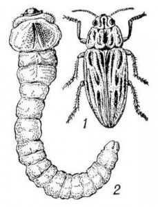

Одно из опасных заболеваний картофеля — рак. Его возбудитель — грибного происхождения. Впервые вспышка болезни наблюдалась в конце прошлого века на территории тогдашней Австро-Венгрии. С тех пор рак картофеля широко распространился во многих странах Европы, перекинулся и на другие континенты.
Надо сказать, что раком картофель особенно сильно поражается при бессменной культуре. И чаще всего это бывает на приусадебных участках, где картофель выращивается на одном и том же месте из года в год. Восприимчивые к раку сорта, например, на приусадебных участках Раменского района Московской области порой снижают урожайность клубней на 80 с лишним процентов. Рядом, на полях колхозов и совхозов, где соблюдают севообороты и культивируют ракоустойчивые сорта, вредоносность заболевания незначительна и площади заражения невелики. Читать далее Рак картофеля
Защита плодовых деревьев. Как только яблони и груши закончат цвести, для сдерживания развития парши и монилиоза деревья неустойчивых к этим болезням сортов опрыскивают 1%-ной бордоской жидкостью (100 г медного купороса и 100—120 г извести на 10 л воды). Можно также применить один из заменителей бордоской жидкости: байлетон (6 г), поликарбацин (40 г), хлорокись меди (30— 40 г).
Байлетон (6 г), коллоидная сера (50—100 г) и натрий фосфорнокислый (100 г), применяемые сразу после цветения, эффективны против мучнистой росы яблони, а коллоидная сера и против грушевого галлового клеща — одного из опасных вредителей листьев груши. Читать далее Защита плодовых деревьев и кустарников
Взгляните на плоды, собранные с деревьев, растущих в одном саду, в год, очень благоприятный для распространения парши — этого бича яблони и груши. Никакой борьбы с паршой в этом саду не велось. Вот поэтому-то и хорошо знакомый садоводам старинный русский сорт Коричное полосатое, обычно не столь заметно поражаемый паршой, сильно пострадал в условиях повышенной инфекции. А рядом крупные, чистые плоды с деревьев Коричного нового, полученного от скрещивания Коричного полосатого с устойчивым к парше североамериканским сортом Уэлси.
Парша — одна из распространенных болезней яблони. Она поражает листья, плоды, снижает урожаи деревьев, ухудшает их состояние, зимостойкость. Инфекция по саду разносится весной спорами гриба, зимующего в опавших листьях. Только с одного такого листа может быть выброшено 2 000 000—3 000 000 спор. Но для этого необходим дождь, причем такой, чтобы зараженные листья промокли насквозь. Поэтому особенно поражаются паршой яблони в дождливые весны. И в таких случаях даже своевременная осенняя уборка листьев мало помогает, особенно если в саду растут не устойчивые к болезни сорта. Единственный выход — химические меры защиты. Читать далее Сорта яблок, устойчивые к парше
Подготовку к хранению овощей советуем начинать задолго до их уборки и даже до посева. Прежде всего приобретите или вырастите на своем участке семена лежких сортов. Такие овощи отличаются от слаболежких более крепкими механическими тканями и плотной кожицей, покрытой восковым налетом. Например, сочные кочаны капусты сортов Слава 1305, Московская поздняя 9 легко повреждаются и хранятся только до декабря, а Амагер 611, Зимовка 1474 с более грубыми и суховатыми листьями пригодны для зимне-весеннего хранения (до марта — апреля).
Лук Каратальский с сочными внутренними и тонкой покровной в один слой чешуей, которая, к тому же, легко снимается, быстро загнивает и прорастает. Напротив, двух-трехслойные плотные сухие чешуи сорта Бессоновский местный длительное время предохраняют его от порчи. Вообще лежкоспособность и транспортабельность сорта часто сочетаются с устойчивостью к болезням. Читать далее Подготовка к хранению овощей, проблемы хранения
На протяжении 30 лет я не применяю в своем саду никаких особых химических средств защиты от вредителей и болезней. За это время испробовал многое и, самым надежным и полезным считаю посадку чеснока между плодовыми деревьями в 2—3 строчки на расстоянии 10—15 см одна от другой. Сажаю чеснок под зиму (но можно и весной). До распускания почек деревья и кустарники опрыскиваю медным или железным купоросом из расчета 300 г на 10 л воды. Это для защиты от грибных болезней.
Как только чеснок подрастет, я начинаю подрезать листья, но не более чем на 1 —1,5 см. На срезе сразу выступает сок и появляется резкий запах. Обрезку чеснока делаю раз в неделю, за лето — 12—15 раз. Срезанную зелень отдаю курам на корм, что тоже приносит немалую пользу. После обрезки, если стоит сухая погода, чеснок поливаю. Читать далее Чеснок против химии
Недавно мы рассказали вам об агротехнических способах борьбы с вредителями и болезнями. На этот раз — о физико-механических приемах.
Они именуются так по традиции. Вернее было бы назвать их просто механическими, так как суть любого из них в механическом вылавливании и уничтожении отдельных особей или групп особей конкретных вредителей в местах фактического или возможного их скопления.
Трудоемко это и дороговато, если время перевести в деньги. Зато получаете экологически чистую продукцию. Строго говоря, до экологически чистой она не дотягивает из-за громадного количества неизбежных побочных продуктов цивилизации в воздухе, воде, почве. Читать далее Физико-механические способы борьбы с вредителями
Как показали опыты на Самарской зональной опытной станции садоводства, в течение двух лет можно полностью освободиться от сферотеки на крыжовнике, используя калийное удобрение (сульфат калия или хлористый калий) при обязательном удалении больных частей побегов с осени.
В начале или середине октября при температуре выше плюс 5° кусты мы обрабатывали 10 %-ным калийным удобрением (1 кг на 10 л воды), а весной при распускании листьев сразу после цветения крыжовника и спустя 7—10 дней опрыскивали 1 %-ным калийным удобрением (100 г на 10 л воды). Читать далее Cферотека на крыжовнике, способ избавиться
Часто бывает так, что оптимистические виды на урожай с приближением сбора обидно тают из-за непредвиденных изменений погоды, болезней растений и полчищ прожорливых вредителей. Это заставляет искать способы защиты сада и в первую очередь хвататься за сильно действующие яды. А нам помнятся послевоенные роскошные сады правобережной Волги. В те времена практически не применяли химикатов. Но в садах не досаждали, как теперь, огневка, пилильщик, тля, реже встречалась мучнистая роса.
Помним мы и то, как рано весной бабушка заставляла нас поливать кусты смородины и крыжовника горячей водой. Справедливости ради, признаемся, что этот прием был бы нами навсегда забыт, если бы не наш сосед по саду, который напомнил об этой простой процедуре. Читать далее Полив кустарников смородины и крыжовника горячей водой
Для борьбы с камедетечением у косточковых я бороздую стволы и скелетные ветки деревьев весной в начале сокодвижения. В результате вот уже 18 лет, прошедших с первого бороздования, ни на одной из трех вишен, трех слив и семи абрикосов не было ни капли камеди.
Борозды провожу на стволе по окружности через 15—18 см, а на скелетных ветках — вертикально-параллельно через 8 см одна от другой. Пели располагать их реже, то между бороздами на коре появляются трещины, а это нежелательно. Когда трещина появляется на штамб весной, еще ничего — к осени в какой-то мере она зарастает, если же осенью — дерево уходит в зиму с порванной «шубой». А трещины чаще всего как раз и появляются осенью, и штамбы в местах растрескивания подмораживатся. Читать далее Камедетечение
В некоторые годы происходит сильный недород огурцов. Причина — ложная мучнистая роса (пероноспороз). Заболевание проявляется всюду, но наиболее агрессивно в открытом грунте южного региона страны. Происходит это в первой-второй декадах июля из-за резких суточных колебаний температуры воздуха, в результате чего на нижней стороне листа оседает влага, способствующая развитию болезни. К сожалению, сортов огурца, абсолютно устойчивых к болезням, нет. Поэтому надо маневрировать агротехническими способами, чтобы опередить срок вспышки огуречного недуга. Один из таких способов — шпалерная культура. Эта статья посвящена опыту южан, отсюда и некоторая специфика в приемах выращивания огурца.
Суть шпалерного способа выращивания огурца в том, что надземную часть растений прикрепляют к опорам-решеткам из реек, столбам, кольям, стенам или рамам с натянутыми в несколько рядов проволокой или шпагатом. Читать далее Шпалерный способ выращивания огурцов
Исстари человеку известны высокие пищевые свойства овощных бобовых культур — гороха, фасоли, бобов, неспроста считающихся белковыми чемпионами. В их семенах содержатся почти все основные вещества, необходимые для нормального питания человека,— белки, витамины, различные соли и многое другое. Однако и качества и свойства бобовых, так же как товарный их вид, урожай, во многом зависят от того, здоровы ли растения, которые могут поражаться самыми различными заболеваниями — грибными, бактериальными, вирусными. Они в отдельные годы приводят к значительным потерям урожая, к снижению его качества. Первоисточником заболеваний в большинстве случаев являются зараженные семена.
Больные семена и внешне характерны: щуплые, легковесные, морщинистые, видны на них и изменения окраски оболочек, различные по цвету и форме пятна, язвы, налеты, черные точки на оболочке и под оболочкой (плодовые тела грибов), деформированность и прочие симптомы. Особенно четко видны признаки поражения на светлоокрашенных семенах. Больные семена нельзя использовать как посевной материал, их надо выбраковывать. Мы познакомимся с основными симптомами наиболее распространенных и вредоносных заболеваний, передающихся с семенами, и с теми мерами борьбы, которые помогут садоводам свести потери урожая до минимума. Читать далее Болезни бобовых
Гусеница древоточца пахучего.
Отверстия на коре ствола. Ходы в древесине очень широкие, продольные, с боковыми ответвлениями. В ходах крупные плоские гусеницы длиной до 10 см, обычно мясокрасного цвета, с запахом древесного уксуса.
1. Черная златка. 2. Личинки жука черной златки
Личинки жука черной златки.
Повреждения сходны с повреждением древоточцем пахучим, но ходы проточены на стволе у корневой шейки и на толстых корнях. В ходах крупные, до 7 см в длину, плоские желтовато-белые личинки с сильно расширенной передней частью тела. Читать далее Их нужно знать в лицо! Определяем болезни и вредителей огорода
Восточная медицина еще 5 тыс. лет назад считала это растение панацеей от многих болезней. Солодка голая (Glycyrrhiza glabra) принадлежит семейству бобовых (Fabaceae). В нашей стране род представлен 12 видами, но только три из них — солодка голая, солодка уральская и солодка Коржинского имеют лекарственное значение.
В Туркменистане, Казахстане, Дагестане и Азербайджане солодка нередко образует сплошные заросли на песках по долинам рек и в местах с близким залеганием грунтовых вод. Встречается в Крыму, на Кавказе и на юге Русской равнины. В народе ее называют солодка гладкая, солодковый корень, солодка железистая и лакричник.
Это многолетнее травянистое растение высотой до 2 м с развитой корневой системой, состоящей из вертикального толстого корневища с большим числом отходящих от него на разных уровнях длинных горизонтальных корневищ, имеющих придаточные корни. Главный корень толщиной до 10 см проникает на глубину до 8 м, достигая водоносного горизонта. Многочисленные стебли, отходящие от корневищ, прямостоячие и маловетвистые. Листья очередные, непарноперистые, до 20 см длины, короткочерешковые, с 3— 8 парами эллиптических или ланцетовидных листочков до 4 см длины и 2,5 см ширины. Цветки беловато-фиолетовые, до 13 мм длины, собраны в негустые пазушные кисти. Цветоносы до 7 см длины. Семена почковидные, зеленовато-серые, блестящие, длиной до 3,5 мм. Цветет растение в мае—августе, плоды созревают в июле—сентябре.
В корне солодки содержится не менее 6 % глицирризина, который в 40 раз слаще сахара. В лекарственных целях используют корневища с корнями, содержащие биологически активные вещества, в том числе органические кислоты, включая аскорбиновую, а также флавоноиды, эфирное масло, горечи, пигменты, камеди, моно- и дисахариды, липиды, пектиновые и смолистые вещества.
Препараты из корней солодки применяют при гиперацидных гастритах, язвенной болезни желудка и двенадцатиперстной кишки, бронхиальной астме, аллергических дерматитах, экземе. Эликсир грудной и сбор грудной № 2, в состав которого входят также лист подорожника и мать-и-мачехи, принимают в качестве отхаркивающего средства. Порошок солодкового корня входит в состав мочегонного сбора, а в сочетании с листом сенны и плодами фенхеля оказывает легкое слабительное действие.
В стремлении защитить насаждения и урожай от вредителей и болезней не надо уповать только на химические препараты. Это было бы неразумно: и дорого, и вредно. Кроме химических способов, имеется много других профилактических и истребительных, ограничивающих размножение, расселение и рост численности вредителей. В ряде случаев они даже более эффективны, чем химические, но основное их достоинство в том, что они безвредны для человека и окружающей среды. Если же сочетать разные способы, то затраты времени и средств существенно уменьшатся, а эффект неизмеримо возрастет в сравнении с применением какого-то одного способа, в том числе и наиболее радикального — химического. Однако для этого необходимо знать симптомы заболевания или вид повреждения, чем питаются вредители, как и когда размножаются, в какой стадии и где зимуют, когда и какие вредные организмы наиболее уязвимы, а когда бесполезно даже пытаться бороться с ними.
Здесь не скажешь: такого-то числа берите такой-то препарат, разведите, опрысните и дело сделано. Но нет повода и для уныния: об основных биологических особенностях вредителей и болезней мы расскажем, а способы борьбы — порекомендуем. Остальное постигнете сами. И, коль скоро возникнет нужда в этом, очень быстро.
Завезли эту болезнь из Америки в Западную Европу еще в 1900 г., а раз завезли в Европу, то, конечно, пришла она и в Россию. С тех пор болезнь распространилась повсеместно. Если с ней не вести борьбу, то она может полностью уничтожить урожай и погубить сами растения. Мучнистая роса — название, на мой взгляд, не очень удачное. Росою тут и не пахнет. Скорее, ее надо было бы назвать мучнистой пылью или налетом.
Для предупреждения болезни, как всегда, нужно применять следующие меры предосторожности: размножать растения только от здоровых и сильных кустов, участок должен быть чистым от сорняков, а осенью, если есть пораженные росой листья, тщательно сгребать и сжигать их, ежегодно вырезать старые и загущающие крону ветки и побеги и тоже сразу же сжигать.
Мучнистая роса опасна для крыжовника и смородины. Многие сорта поражаются ею, одни больше, другие меньше. Болезнь проявляется на побегах, листьях, плодах. Побеги плохо развиваются, искривляются, потом засыхают, листья мельчают, скручиваются и тоже засыхают. Плоды крыжовника развиваются плохо, мельчают, делаются невкусными, и урожаи их снижаются. Плоды покрываются (впрочем, и побеги, и листья тоже) плотным серым налетом, который не стирается. Читать далее Как победить мучнистую росу
На персике, как ни на какой другой плодовой культуре, надо очень внимательно подходить к оценке заболевания деревьев, так как они чрезвычайно чувствительны к фунгицидам. Несвоевременное или неправильное применение их вызывает иногда дырчатость и преждевременное осыпание листьев, задержку роста побегов, осыпание плодов. Например, от обработки персика бордоской жидкостью после цветения могут быть ранний листопад, более позднее (в среднем на год) вступление деревьев в плодоношение, снижение их зимостойкости, мельчание плодов и ухудшение их качества. Часто плоды так и не приобретают типичной для сорта окраски. Поэтому советуем главное место в защите растений отводить агротехническим способам борьбы и своевременным фито-санитарным приемам.
Преждевременное усыхание может быть вызвано целым рядом причин неинфекционного происхождения — подмерзанием, ожогами, неправильной обрезкой, неблагоприятными почвенными условиями. В прямой связи с ослаблением деревьев — распространение и развитие наиболее вредоносного инфекционного усыхания — цитосно-роза. Возбудитель болезни — гриб — чаще поражает молодые побеги, переходя затем на более старые ветви и вызывая их отмирание. При сильном развитии болезни усыхают скелетные ветви и деревья. Возможно также поражение дито-спорозом штамбов и оснований скелетных ветвей, на которых образуются язвы и некрозы коры. Читать далее Заболевания персика, методы борьбы с вредителями и болезнями


")

{kind=link}